Some Similes of Kalidasa *
BY P. MAHADEVAN
Although Kalidasa has been the touchstone of our
national literary taste for well nigh two thousand years, it cannot be said
that Indian scholarship has made any sustained attempt to consider his genius
against the background of a universal poetic tradition that would include along
with Valmiki, Homer, Virgil, Dante, Shakespeare and Milton. The best work on
our national poet has been done by foreigners; but even they have not entirely
been free from more or less faint suggestions of patronage. It is, however, a
remarkable fact that his poetry has a power of suggestive anticipation of many
of the felicities which have subsequently found varied expression in later
poets of recognised universal appeal.
We of the present generation of English-educated
Indians have been speaking with amorphous enthusiasm of a renaissance of our
literatures, thanks to our contact with the West through its books. We have
played–some of us are still playing–the sedulous ape to our distant exemplars,
actuated by a mystic faith that thereby the rock would burst, and the waters of
inspiration gush forth in an unfailing stream. Our zeal as proselytes has been
unquestionable, but we have made no progress beyond the gates. For all
practical purposes, we have fallen between two stools–aliens at home and
ignored abroad; and that sterility is the badge of our tribe. A few of us have
achieved the ambiguous distinction of an exotic flowering; but the blossoms
have no fragrance, and their colours look blighted by a congenital anaemia. We
have imitators of the latest school of English poets, but not many to pay
homage to the greatness of Kalidasa. We have not even managed to give the world
one edition of his works in English which is at once scholarly, simple, elegant
and readable. Without some such renovation of our classics, I do not know how a
renaissance, in the accepted sense of the term, can be expected to be brought
about.
It is with a view to show that a study of our
ancient Indian classics in the modern setting is very much worth while that I
have ventured to draw attention to some of the many similarities in idea or
imagery between the poetry of Kalidasa, on the one hand, and the poetry of
English poets, on the other. I am too acutely conscious of my limitations to
attempt anything but an exploration of the outermost fringe of the subject. I
feel tempted to exclaim with the poet:
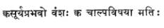
(Raghuvamsa: I–2)
applying the mot not to the resplendent race of the Raghus, but
to the poet himself as one of the authentic children of the god of light, who
is elsewhere celebrated as the god of song also. But my excuse is that poets
form a world-brotherhood who recognise no frontiers. To love anyone of them is
to love them all. I see him, as it were, through a glass darkly; but it is my
hope that others better equipped than myself might do adequate justice to the
point of view which I commend to their acceptance. Like the merry Grecian
coaster, I shall skip from island to neighbouring island. The sedate scholar,
like the grave Tyrian trader, carrying his much more precious cargo, need not
avert his face from me, but even tolerate me as one of the light-hearted
mariners of the waves whose frail craft is unseaworthy, and who has no
intention of disputing with him the mastery of the ocean.
The antiquity of the simile may be said to be
co-eval with that of poetry itself. Indeed, when the first simile was thought
of, poetry may be said to have been born. Its function has ever been to
clarify, emphasise or embellish thought through speech. It is the spontaneous
expression of the wonder of the unfolding mind trying to be at home in the
world, to organise its impressions of it, and evolve out of them patterns of
feeling, thought or action. It is the parent of all figures of speech, all alankaras,
which are at the root of the basic distinction between prose and verse. The
metaphor implies it, hyperbole exaggerates it, fallacy transfers it, allusion
equates it, while suggestion, reminiscence, echo or flavour are like clouds of
glory trailing round it. Alliteration exploits it first through sound, and then
proceeds to sense through puns. The dispraise of puns in the English literary
tradition has always seemed to me a piece of critical obscurantism. It is, I
feel, an indirect confession of the difficulty of managing them. But the
greatest poets have always delighted in it; and our Dandin puts it in the
forefront of the qualities which distinguish Kalidasa’s poetry:
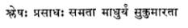
a judgement which, for its bland perspicacity, might have won Horsce’s
approval or roused Pope’s envy. Shakespeare reveled in it both in his gay and
grave moments, and remains without a fellow in English literature. Therefore,
to consider poetry abstracted from the simile is to attempt to think of vak
independently of the artha.
All similes can be considered under one of two
heads–the universal and the particular. The same symbols may have different
significations to different people, or the same ideas be conveyed by different
symbols at different times and places. The limiting factors are provided by the
accidents of race geography, history, flora and fauna. The apprehension of
beauty has ever been subjective, but must needs convey itself through objective
symbols. A given frame of mind or phase of thought colours what is seen so
variously as to give us all the rasas according to the context. The
scope of Kalidasa’s similes embraces the entire gamut of life and he plays
infinite variations on it. Nature and human nature, art and the inexhaustible
treasures of a mythology, which is still a reality deep down in the
consciousness of our race, invest his poetry with the light that never was on
sea or land.
It is worthy of note that one kind of simile, the
epic or Homeric, is conspicuous by its absence from Sanskrit poetry. Instead,
we have complete parallelisms which may be described as the logical
consummation of the epic simile. The charm of the latter arises, as we know,
from its naivete; but it is also an indication that the poet loses the thread
of his it narrative with the inconsequence of a child attempting to tell a
story. In Valmiki similes flash out in single words or brief phrases that
illumine without interrupting, the narrative. Complete parallelisms represent a
more conscious, or self-conscious, stage in which the poet stands out of his
theme, and distils the essence of it from all points of view. I shall not
presume to determine the rival claims of the two kinds of simile, but shall
content myself with the safe remark that much might be said on both sides.
Most of us are familiar with the famous description
of a cloud
that’s dragonish,
A vapour sometimes like a bear or lion,
Sometimes a tower’d citadel, a pendent rock.
A forked mountain or blue promontory.
(Antony and Cleopatra.)
–Impressive and realistic at the same time, and within the observation
of all of us. Shakespeare’s cloud is static, is really and objectively a cloud.
But Kalidasa sees in it the animated shapes of majestic elephants disporting
themselves in their forest homes on the slopes of mountains.
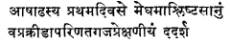
(Meghaduta: I–2)
The justice of the comparison cannot be fully appreciated by those who
have neither our mountains, nor our clouds nor our elephants. Mr. Eliot has
given us in his Prufrock a vigorous description of the antics of the
London fog by seeing in it the movements of a cat:
The yellow fog that rubs its back upon the
window-panes,
The yellow smoke that rubs its muzzle on the
window-panes,
Licked its tongue into the corners of the evening,
Lingered upon the pools that stand in drains,
Let fall upon its back the soot that falls from
chimneys,
Slipped by the terrace, made a sudden leap,
And seeing that it was a soft October night,
Curled once about the house, and fell asleep.
–as complete in its own way, and more meticulously minute as befits our
modern scientific temper! We are told that Mr. Eliot is a student of Sanskrit;
and it would be interesting to know if he was aware of Kalidasa’s simile when
he achieved the above tour de force.
Milton speaks of a ‘sable cloud that turns forth her
silver lining on the night.’ Kalidasa goes to the goldsmith for a similar
comparison:
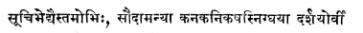
(Meghaduta: I–37)
Keats speaks of the beadsman’s prayers going up ‘in
a frosted breath like incense.’ Rossetti speaks of hearing the tears that fell
from the eyes of the ‘blessed damozel.’ But I do not think there is in English
poetry such a bold conceit as Kalidasa’s
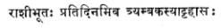
(Meghaduta: I–58)
Siva’s laughter congealed into the snowy peaks of
the Himalayas must be deemed sui generis.
Longfellow says:
In the infinite meadows of Heaven
Blossomed the lovely stars–
The forget-me-nots of angels . . .
Kalidasa says:
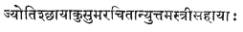
(Meghaduta: II–3)
Coleridge’s description of the ‘ancient mariner’
becalmed in the tropical seas–as idle as a painted ship upon a painted
ocean–has been justly famed for its simple felicity. It is apparently a
favourite idea with Kalidasa, for he presses it into service on a variety of
occasions. I shall choose one which happens to furnish an example of the fusion
of the painter in the poet. Dilipa is guarding the sacred cow on the slopes of
the Himalayas; suddenly, he hears the roar of a lion as it springs on the
helpless, cow his charge. But as he prepares to rescue the victim, he is
overpowered by a mysterious inhibition which the poet thus describes:
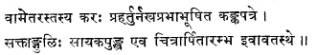
(Raghuvamsa: II–31)
The phrase ‘a baptism of fire’ has become trite by
repetition; But Kalidasa anticipated the phrase in describing the prowess of
Raghu:
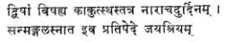
(Raghuvamsa: IV–41)
Indra beseeches the Supreme Being with all his
thousand eyes ‘like a collection of lotuses shaken by the gentle breeze.’ The
synchronising of the action suggests Wordsworth’s picture of the dancing
daffodils waving in the breeze. Wordsworth’s description of flocks in their
groups ‘forty feeding like one’ is another instance in point. Kalidasa speaks
of
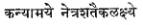
Shelley’s description of the love of the moth for
the star is appropriate to Kama in the act of aiming his floral shaft at Brahma
himself:
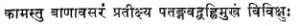
(Kumarasambhava: III–64)
Said an English poet:
Ye meaner beauties of the night
That poorly satisfy our eyes,
More by your number than by your light,
You common people of the skies,
What are you when the moon shall rise?
Kalidasa puts it more succinctly thus:
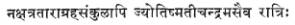
(Raghuvamsa: 6–22)
In a famous simile drawn from the current at the
Straits of Dardanelles, Othello speaks of the icy and compulsive course of his
revenge. The glamour of that passage is not in its geography, which is not
perhaps scientifically accurate, but in the emotion of the speaker. But
Kalidasa speaks of the course of a river blocked by a mountain, and making a
retrograde motion like the planets themselves:
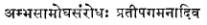
(Kumarasambhava: II–25)
Similarly, Milton’s description of Vallambrossa
‘thick-strewn with leaves in autumn ‘–a description derived from hearsay, I
believe–cannot to the Indian mind at least, have the same suggestiveness as
Kalidasa’ picture of the Ganga over-crowded with flocks of swans in autumn.
Keats describes the sleeping Madeline as resembling
a rose that has shut and become a bud again. Kalidasa has many instances of a
similar description of the lotus by day and by night. It is the bright day that
brings forth the adder; Kalidasa warns that in clear lakes crocodiles may be
hidden from view:
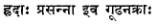
(Raghuvamsa: VII-3f)
The figure of the fly buried in amber goes back to
classical times. Lamenting over the dead Indumati, the bereaved husband says:
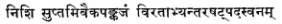
(Raghuvamsa: VIII-55)
She is further described as
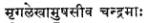
(Raghuvamsa: VIII-42)
which recalls Coleridge’s ‘horned moon with one bright star at the
nether tip.’
The mystic power of the human eye has been
recognised in the earliest works of our poets. Love at first sight is, I am
inclined to think, one of our ideas, which has made a westward migration. We
have a reference to Tara-maitri in our Grihyasutras. Two of the
loveliest, Elizabethan lyrics celebrate the power of the eye in love: “Drink to
me with chine eyes,” and “Tell me where is fancy bred.” Kalidasa has the same
idea:
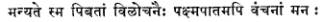
(Raghuvamsa: XI–36)
where he describes the loving greetings of the citizens to Rama returning from his exile. Shakespeare’s ‘cloud-capp’d towers’ is an echo of
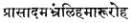
(Raghuvamsa: XIV–29)
Coleridge’s description of lightning in the Ancient Mariner is
parallelled by
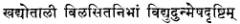
(Meghaduta: II–18)
where it appears like the glitter of a row of fire-flies.
Shakespeare’s description of the Dover cliffs has
many counterparts in the aerial view of the earth, the most famous of them
being also the most elaborate:
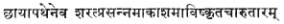
(Raghuvamsa: XIII–2)
The reduction of scale combined with the
preservation of proportion is extraordinarily vivid. Darkness is like
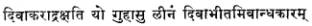
(Kumarasambhava: I–12)
a night-bird dwelling in a cave like Milton’s Melancholy.
It is a convention of our poetry that the ocean is
full of submarine fire as the mountains are full of precious gems. Coleridge is
the only poet who has described the phosphorescence of under-sea life in
picturesque terms. Kalidasa does not particularise, but he refers to the
phenomenon when he says:
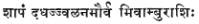
(Raghuvamsa: IX–82)
Shakespeare speaks of the one dram of evil that
o’erspreads all.
Kalidasa says:
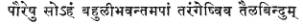
(Raghuvamsa: XIV–38)
Infamy is like a drop of oil diffusing itself on waves of water.
One of the epic similes of Milton describes Galileo
at work with his new wonder, the telescope. Kalidasa describes the lens and its
properties with equal accuracy and appositeness:
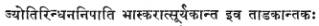
(Raghuvamsa: XI–21)
Byron exulted that Freedom’s banner though torn
will still stream against the wind. Kalidasa has not only observed this small
detail of waving banners, but goes one better by recording the fact that they
are motionless on account of the motion of the chariot:
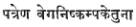
(Raghuvamsa: XV–48)
Macbeth is hailed as Bellona’s bridegroom–a
description that has led to much discussion as to its propriety. Kalidasa makes
no bones about it. He makes the goddess of victory a captive to be brought back
in triumph by Indra:
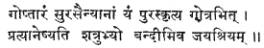
(Kumarasambhava: II–32)
Of sustained descriptions, one of the most delicate
is that which occurs in Canto IX of the Kumarasambhava of Agni in the
shape of a dove. For vigour and verisimilitude, it recalls Shakespeare’s description
of the hounds of Sparta in A Midsummer Night’s Dream or of the dew
lapped bulls in Venus and Adonis. The passage is too long to be quoted
here; but to those who know it and do not know Shakespeare, or rather vice
versa, the comparison is worth special study.
I have till now dealt with only those passages for
which there seemed directly or indirectly counter-parts in the poets of the
West. My object in doing so has not been to plead for the consideration of
Kalidasa as a poet, but rather to show that in the whispering gallery of time,
voices are recaptured again and again, but so as with a difference, proving
conclusively how poets are of one breed, and how they react to their
inspiration in almost identical ways.
But there are other similes of Kalidasa for which
there cannot be parallels elsewhere. There is a residuum of uniqueness in every
poet, which gives him his character and individuality. There is a whole series
of figures in which Kalidasa deals with the invisible world, immaterial and imporlderable
values. These can have a meaning only in their contexts, and have to be studied
with them. But even of the purely imaginative quality of poetry, there is much
that cannot be translated without loss of the original bouquet. Such felicities
as
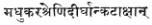
(Meghaduta: 11–35)
are delightful snapshots of life and nature. An English critic has tried
to make out that the idea of the side-glance of a maiden suggesting a string of
bees in a long line is a familiar one. But truth is that the maiden’s glances
are described, and bees are described separately; the peculiar combination of
the two is found only in Kalidasa.
Of similes which appeal to us as Indians, I shall
venture to mention a few before I conclude. In Sakuntala, there is a
famous description of a sense of joy tempered by memories of previous births:
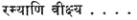
(Sakuntala: Act V)
The same idea is found in a variant form in
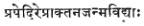
(Kumarasambhava: I–30)
Shelley came nearest to the idea in his Ode to a Skylark
where he speaks of ‘our sincerest laughter’ being fraught with some pain
and our sweetest songs being those that tell of saddest thought. He, however,
does not account for the phenomenon as Kalidasa has done. The poetic use of
memories in their philosophical implications has been but slightly touched upon
by Vaughan in his Retreat and Wordsworth in his Intimation Ode.
It is not without significance that the idea is found more pervasively in the
work of many modern, living poets.
Kalidasa epitomises the Vamanavatara thus:
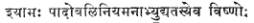
(Meghaduta: I–57)
A woman who looses her tresses twined with strings
of pearls:
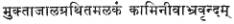
(Meghaduta: I–63)
Indumati’s progress through the hall of Swayamvara:
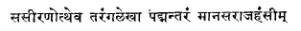
(Raghuvamsa: VI–26)
One of the crispest utterances of Kalidasa is in
the description of the abdication of Raghu:
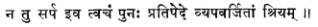
Incidentally, it is the final answer to those who
have felt dissatisfied with Shakespeare’s killing of Lear, and who have sought
to re-translate him to the throne.
The monkeys going in search of Sita are compared to
the distracted thoughts of Rama himself:
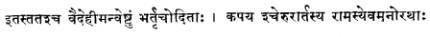
(Raghuvamsa: XII–59)
It is also a peculiar feature of Kalidasa’s poetry
that he presses into service much valuable scientific lore in the guise of
mythological symbols. Thus the moon plays a very prominent part in his
descriptions; it is more than stage property, it is the lord of the ocean, of
herbs and of the thoughts of men. The comparison of rivers to maidens is
conventional enough; but Kalidasa gives it a fresh grace, a tremulous charm by
helping us to see the woman in the river. The ripple of water is like the
knitting of a beautiful maiden’s eye-brow; the eddies formed in a stream are
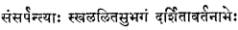
(Meghaduta: I–28)
My main aim has been to set Kalidasa amidst his
peers from the point of view of one of the easiest tests that can be applied to
any poet. May I say how refreshing, modern and urbane is the personality of
this man who speaks to us through a gap of time which has witnessed the rise
and fall of half a dozen empires and cultures! He saw life steadily, saw it
whole and preserved, withal, a divine sense of proportion. He had no
inhibitions, no frustrations and lived in the light of a thought which has
perennial vitality. I do not know how else we are to renew the springs of our
life than by bringing home to our generation the treasures of his mind and
spirit with all the strength of our awakened zeal.
* Based on an address delivered under the auspices
of the Madras Sanskrit Academy–Kalidasa Day on 7-10-43.